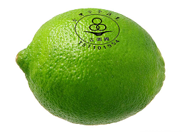
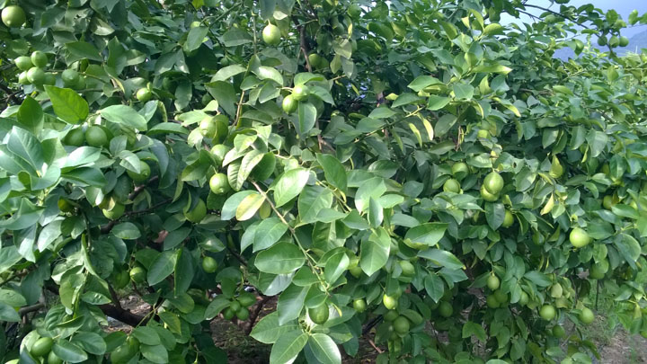

台灣安全蔬果
高樹鴻福檸檬園
以種植安全檸檬為宗旨獲得吉園圃認證
預計採收日期：9/5、9/19、9/26。
每台斤 60 元。(運費130元，滿20斤免運費。)
訂購資訊更新日期：2015-09-03
高樹鴻福檸檬園
位於屏東縣高樹鄉水源保護區內，而且我們力行草生栽種，相信在這種條件下所生長的有仔檸檬品質會更好。我們的預計採收日期就是為檸檬防治病蟲害後推算的安全許可日期之後，並不是隨興的採收。再來因為我們直接面對消費者，也確保每次的採收後檸檬不需要冷藏，當天即全部出貨完畢。我們訴求的就是新鮮與安全的檸檬。
ATM 轉帳帳號 0679-979-058330 三民分行 劉芯卉吉園圃安全蔬果標章
隨著生活水準提升，國人對食的安全日益重視，而農產品農藥殘留是食品安全最重要的環節之ㄧ，但因農藥殘留無法由外觀辨別，因此政府推動「吉園圃」安全蔬果標章，期透過農政單位輔導，教育農民安全用藥，申請審查並使用吉園圃標章行銷產品，以建立消費者信心，形成市場區隔，提升國產蔬果競爭力。來源：吉園圃官方網站
請給我們一個讚
 看更多關於我們的圖文
看更多關於我們的圖文
